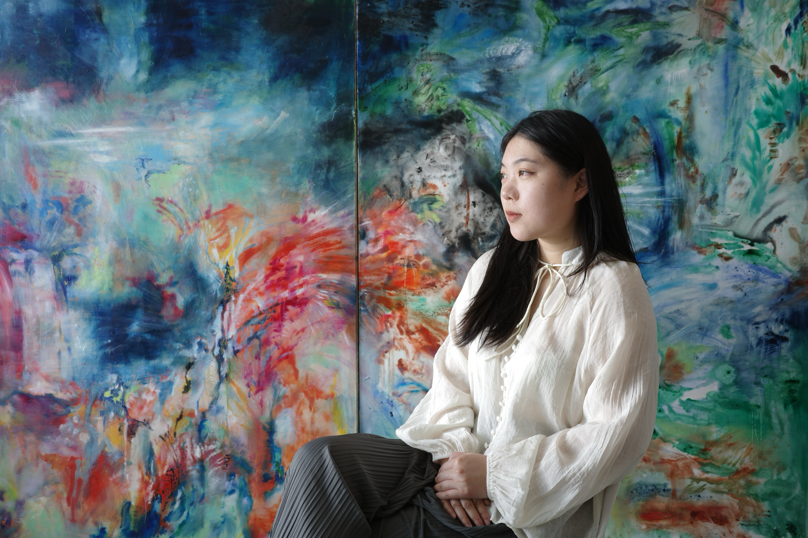

Biography
Junhan Shen (b. 2000, China) is a visual artist based between New York and China, working across painting and drawing. Shen holds an MA in Art and Art Education from Columbia University, and a BFA with Honors in Illustration from the School of Visual Arts. Her work has been exhibited in New York, Melbourne, and Beijing. She has also worked in museum education at the Museum of Modern Art and the Jewish Museum. Her experiences of moving between different places, languages, and cultural contexts inform her practice.

CV
Education
2024–2026
Columbia University — New York, USAMA in Art and Art Education
2020–2024
School of Visual Arts — New York, USABFA in Illustration, Graduation Honors
2023
China Academy of Art — Hangzhou, ChinaSummer class, Printmaking Department
2022
SVA Destinations Program — Paris, FranceArt History
Recent Working Experience and Public Engagement
2025–2026
President of NAEA Student ChapterColumbia University
2025–2026
MoMA Access Program and Family Program AssistantLearning and Engagement Department, The Museum of Modern Art, New York
2025–2026
Academic Year Education InternThe Education Department, The Jewish Museum, New York
2025–2026
Art Exploration Intern Teacher at Hollingworth Learning CenterColumbia University, New York
Public Projects
2026
Research and Art Project “Untranslated Things”Offit Gallery, Columbia University, New York
Selected Awards and Grants
2026
Columbia University Myers AwardeeCommissioned artist for Gottesman Libraries
2025
AY25 FTGA Point Award / Teachers College Fellowship
2024
Second Prize, School of Visual Arts Writing Program Contest
2020–2024
Silas H. Rhodes ScholarshipSchool of Visual Arts
2021
IPEDIA Project China's New Youth Creators
2019
Lauriston Arts Association Acquisition PrizeLauriston Girls' School
2018
Nicky May Memorial Award for ArtLauriston Girls' School
Solo Exhibition
2026
Untranslated ThingsOffit Gallery, Columbia University, New York
2026
The QuerentColumbia University Gottesman Libraries, New York, USA
Group Exhibitions
2026
CircuitryStudioninedee, New York, USA
2026
Future Art FestivalInstitut Francais, Beijing, China
2025
True SelfThe BLANC Gallery, New York, USA
2025
Spring Studio WorksMacy Art Gallery, New York, USA
2024
Fall Studio WorksMacy Art Gallery, New York, USA
2024
September PrimerMacy Art Gallery, New York, USA
2024
SVA Senior ShowSVA Chelsea Gallery, New York, USA
Press and Magazines
2026
Create! Magazine, Issue No. 59Juried by Indira Cesarine
2026
Artsin Square Magazine, Issue 11Guest curated by Laurent Mercier
2026
New Exhibit: Untranslated Things, by Junhan ShenBookends and Beginnings — Gottesman Libraries, Teachers College, Columbia University
2025
Teachers College NewsroomFeature
2024
Al-Tiba9 Contemporary Art10 Questions interview
2024
The Barbagelata Contemporary Art FoundationArticle
2024
Match Factory MagazineArticle
2021
FASHION ZOO, Volume 1Published work
Permanent Collection
2019
Lauriston Girls' School Arts AssociationMelbourne, Australia